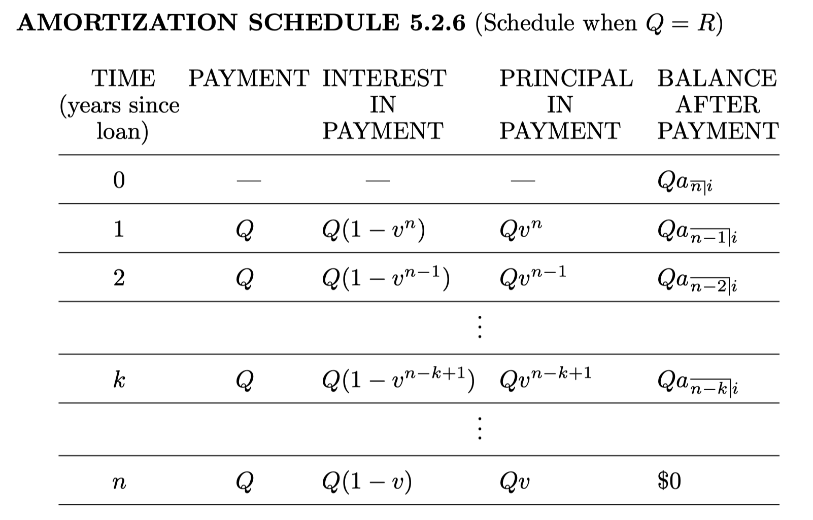

When a loan is an amortized loan, each payment is understood to consist of:
The chart (table) containing the payment amount, interest paid in each payment, principle repaid in each payment and the OLB after each payment is called the amortization schedule.
Consider a loan for \(1,000\) which is to be repaid in four annual payments under the effective annual interest rate of \(8\%\).
We assume that all payments are equal.
What is amount of each level payment?
Then, amount of interest contained in the first payment is
Hence, the portion of the first payment that goes toward the reduction of the outstanding balance is
The outstanding balance at the end of the first year is, then
If we continue the procedure we completed for the first year for the remaining 3 payments, we get the entire amortization schedule:
| Year | Payment | Interest | Principal | OLB |
| 0 | 1000 | |||
| 1 | 301.29 | 80.00 | 221.92 | 778.08 |
| 2 | 301.29 | 62.25 | 239.67 | 538.41 |
| 3 | 301.29 | 43.07 | 258.85 | 279.56 |
| 4 | 301.29 | 22.36 | 279.56 | 0 |
A \(1,000\) loan is being repaid by payments of \(100\) (plus the final smaller payment) at the end of each quarter for as long as it is necessary. Assume that \(i^{(4)}=0.16\).
Find the amount of interest and the amount of principal repaid in the fourth payment.
Questions
At what time we need to know the OLB?
Which method, prospective or retrospective to compute the balance?
We use retrospective method here:
Then the interest to be repaid in the fourth payment is \(812.70 \cdot 0.04 = 32.51\).
The principal payment in the fourth payment is \(100 - 32.51 = 67.49\).

For the case that \(Q\neq R\), please check the table on page 232.
Let \(L\) denote the loan amount, \(B_t\) give the balance at time \(t\), immediately following any payment at time \(t\), \(P_t\) signify the payment amount at time \(t\).
If \(i_t\) denotes the interest rate for the interval \((t-1, t]\), then
In particular, if \(n\) denotes the duration of the loan in interest periods, then \(B_n = 0\).
Adam takes out a \(20,000\) loan for ten years at a level annual effective interest rate of \(5\%\). At the end of each year, he pays \(2,000\) in principal, which is \(1/10\) of the loan, along with the interest due. Find a formula for \(P_t\).
Solution:
If \(t\in \{0, 1, 2, \dots, 10\}\), then \(B_t = 20000 - 2000t\). Therefore,
Note: The payments in this example form an arithmetic progression.
Beatrice takes out a \(20,000\) loan for ten years at a level annual effective interest rate of \(5\%\). Her original payment is \(P\) and than her payments increase by \(200\) each year. Find \(P\).
Here it is simpler to use Equation (3.9.4) for present value of an arithmetic progression:
Since \(\displaystyle a_{\overline{10}|0.05} = \frac{1 - (1.05)^{-10}}{0.05}\),
Cedric also takes out a \(20,000\) loan for ten years at a level annual effective interest rate of \(5\%\). His payments grow by \(20\%\) each year. Find the amount of his first payment.
Cedric’s payments are: \(P_t = P_1(1.2)^{t-1}\).
Using the \(5\%\) interest rate, these have present values
Thus,
Solve it for \(P_1\), and we have \(P_1 = 1070.97\).